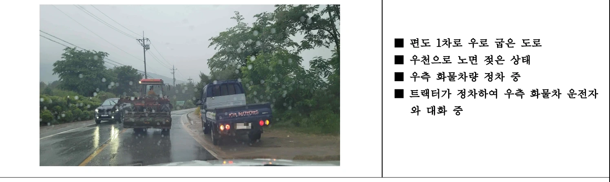

779. 在下列情况下，最安全的两种驾驶方法是？

- ①由于拖拉机停车，因此持续鸣笛催促其行驶。
- ②对面车辆通过时，立刻跨越中心线从左侧超车。
- ③由于右侧停放的货车可能会突然出发，因此行驶时应防范这种情况。
- ④如果拖拉机右侧有空间，则可以利用该空间超车。
- ⑤拖拉机的速度比机动车慢，因此比起强行超车，最好是保持安全距离行驶。
查看答案
答案
③ 由于右侧停放的货车可能会突然出发，因此行驶时应防范这种情况。
⑤ 拖拉机的速度比机动车慢，因此比起强行超车，最好是保持安全距离行驶。
依据
如果前方有慢速农业机械，如耕耘机、拖拉机等，其速度比汽车慢，因此开车前必须仔细监控农业机械的行驶情况。凭主观预测驾驶或试图超车是危险的。越过中线超车是危险的，不是安全的驾驶方法。
依据文字为学习用机器翻译。